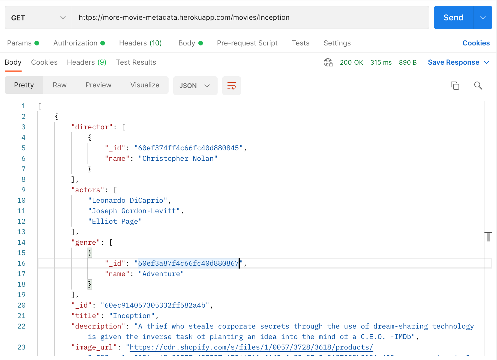

The challenge:
To create a full stack application including a backend and a frontend that provides information on movies, genres and directors using the MEAN tech stack. This is a good practice to get known to the whole process of crafting an application from scratch and being able to present an ambitious app in the end. The project was my own and guided by Career Foundry with a tutor and mentor.
- MongoDB
- Node.js, Express, Axios
- TypeScript
- Angular
- RxJS
- Material Style Guidelines
- Backend: 1 week
- Frontend: 1 week
Lead developer:
- Hannes Donel
Mentor:
- Ted Walther
Tutor:
- Ivan Bila
The process:
Server-Side
First of all I created a non-relational database with MongoDB. MongoDB to me seems to be the more flexible and modern approach of handling a database as long as it is not too big (which is definitely the case right here.) Therefore I had to reflect about the schema of a document that represents a movie, a genre, a user or a director and documented it. That was important as I'd like to avoid writing complicated code in the frontend to deal with documents having different schemata. I separated the collections by users, genres, directors and movies.
After that I created a RESTful API using Node.js and Express, that interacts with the database using CRUD methods. The API can be accessed via commonly used HTTP methods GET, POST, PUT and DELETE. To do that I used the slightly bigger axios over redaxios because I wanted to be able to highly customise the server responses that are being sent after a request is made. I've documented the endpoints including required data and response data types to make it accessible for everyone not familiar with that project: Documentation of MMM enpoints.
I also included user authentication and authorisation code in the form of basic HTTP authentication, password hashing and JWT authentication. To make sure that everything is working as expected I tested the API using Postman. In lack of a local server machine I decided to host the apps backend on Heroku. This is a common, reliable and industry standard solution. I connected my CLI with Heroku to instantly be able to push my code out of VS Code.
Server-Side
On the client side I've chosen to go with Angular and Typescript because
it is super easy to create a good looking and fully responsive app with
it. The Angular Material framework that follows the material design
guidelines is awesome for non complicated UI (which we have here). Forms
in Angular are furthermore very powerful regarding validation and UX.
Since we have forms for user data I'd like to provide the best user
experience possible here only sending validated data to the server.
The UI is organised as one page that provides all movies including a
search and filter function. The movie cards are the hub of the wheel where
the user flow starts. Actors, directors, genres and a favourite button are
instantly there to directly interact with.
I started by implementing all API requests provided by my backend. Then I created the movie view which is the main part of my app. For my CSS I've chosen to go with Sass as this is better organisable, a mobile first approach and separated media queries and animation in a separate file that I'd import in another CSS file when needed.
I used Angular predefined color palettes to implement a dark mode. In the main ts file there is a variable that is a boolean which is toggled by a button in the menu bar.


Resume:
This was a very interesting journey. Dealing with other peoples APIs can be frustrating. Therefore it was very rewarding to be able to build my own one here and then use it with my frontend. It was the first time to for me to use MongoDB on the backend side and Angular on the frontend. MongoDB is super approachable. Angular is a little bit more complicated but once I've gotten into it I started to enjoy how files are separated, using bi-directional data binding and using its great functions out of the box without installing anything additional.